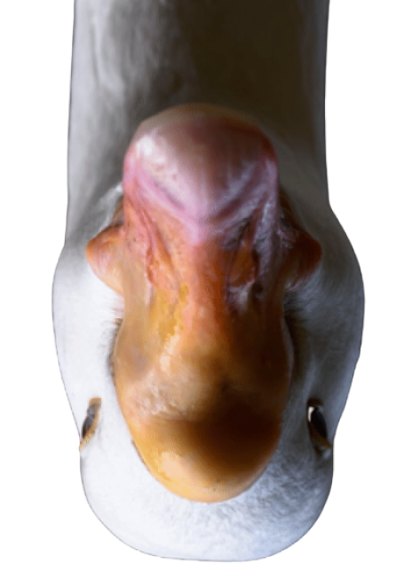

Г
Ь
У
С
Гусь — одна из самых умных домашних
птиц. Они способны самостоятельно
гулять, без проблем находить дорогу
домой, способны защитить себя и свое
потомство от хищников.
Несмотря на то что самыми
распространенными домашними
птицами в хозяйстве признаны куры,
тусь был все же одомашнен первым!
Многие привыкли, что гусь — это такая
‘домашняя птица, и ничего больше.
Но мало кто знает, что природа
и эволюционные процессы подарили ему
невероятную выносливость
и способность к выживанию
в действительно суровых условиях.
Обитает он на территории многих стран
мира и разнится в зависимости от вида.
Как и лебеди, гуси моногамны —
пару себе они выбирают на всю
жизнь, примерно в возрасте 3-х лет.
В случае гибели одного из партнёров
другой может навсегда остаться
в одиночестве, а может и найти
новую пару спустя несколько лет.